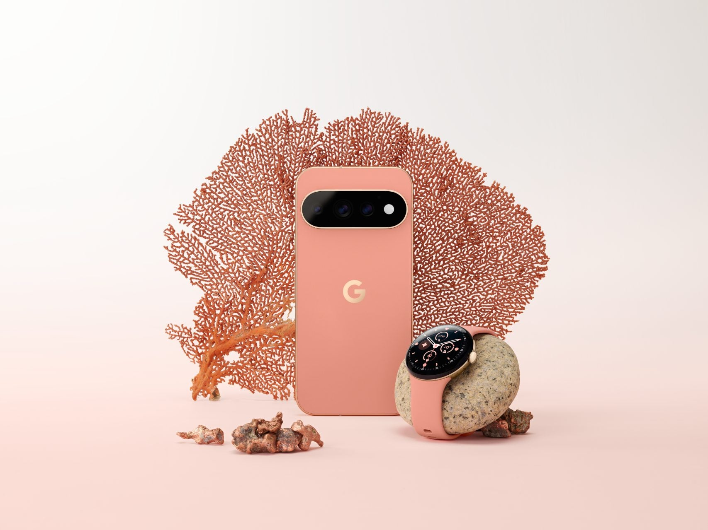

Pixel 11 Pro, Pixel Watch 5 et Pixel Tag : ce qui change vraiment dans les nouveaux produits Google

🛒 En lien avec cet article
Publicité — Liens de partenariat Amazon : une commission peut être reversée, sans surcoût pour vous.
🔥 Top produits tech du moment
🛒 Voir le prix : SSD 1 To Samsung
🛒 Voir le prix : PlayStation 5
🛒 Voir le prix : Apple Watch Series 10
Publicité — Liens de partenariat Amazon : une commission peut être reversée, sans surcoût pour vous.
Les géants de la tech concentrent une part croissante de l'innovation mondiale. Leurs annonces ont un impact direct sur les utilisateurs, les développeurs et l'ensemble du secteur.
Ce qu'il faut retenir
Google annonce les Pixel 11 avec un capteur photo principal de 48 Mpx et un design légèrement modifié.
Le Pixel 11 Pro intègre de nouveaux capteurs et un système d'éclairage contextuel à l'arrière, et améliore la photographie et la performance générale.
La gamme inclut également le Pixel Tag pour la localisation d'objets et la Pixel Watch 5 avec des améliorations de performance et de nouvelles fonctionnalités de santé.
Pourquoi c'est important
Cette information conforte la position des grands groupes de la tech dans l'économie mondiale. Elle concerne directement les utilisateurs de technologies numériques et mérite d'être suivie de près dans les prochaines semaines. Pixel 11 Pro, Pixel Watch 5 et Pixel Tag : ce qui change vraiment dans les nouveaux produits Google est ainsi un signal à prendre en compte pour comprendre les évolutions du secteur.
En résumé
Retenez l'essentiel : Pixel 11 Pro, Pixel Watch 5 et Pixel Tag : ce qui change vraiment dans les nouveaux produits Google. Cette actualité a été rapportée par 01net. Nous continuerons de suivre ce sujet et de vous tenir informés des prochaines évolutions.
🚀 Vous êtes freelance tech ?
Calculez votre TJM en 30 secondes : micro-entreprise, SASU, EURL ou portage salarial. Gratuit, taux 2025.
Calculer mon TJM →Source : 01net